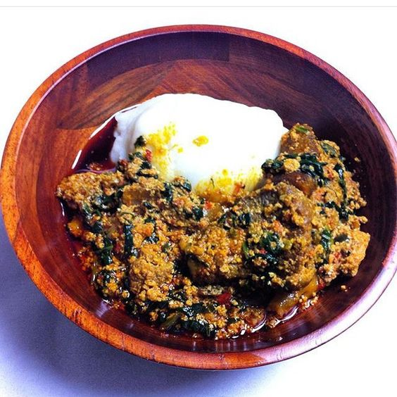

New Releases

Nov 11, 2022 | 3 comments
Afrobeats superstar singer, Ayodeji Ibrahim Balogun “Wizkid”, has deligh-
ted his fans with the release of the highly anticipated 5th studio album ‘More
Love, Less Ego’ (Listen here).
CONTINUE READING
Best of Africa Dishes
Nigerian Foodies: Food recipes are different across the world. Learn how to cook delicious food recipes, drinks, desserts. In addition, get daily health tips and more.
CONTINUE READING

Nov 4, 2022 | 12 comments
Davido becomes PUMA global brand ambassador
Nigerian singer David Adeleke widely known as
Davido has joined the long list of global brand
ambassadors of international Sports company PUMA.
CONTINUE READING
Oct 18, 2022 | 3 comments
Developer Humor
If debugging is the process of removing bugs, then
programming must be the process of putting them
in ü§£üòÅ..
CONTINUE READING

Oct 3, 2022 | 3 comments